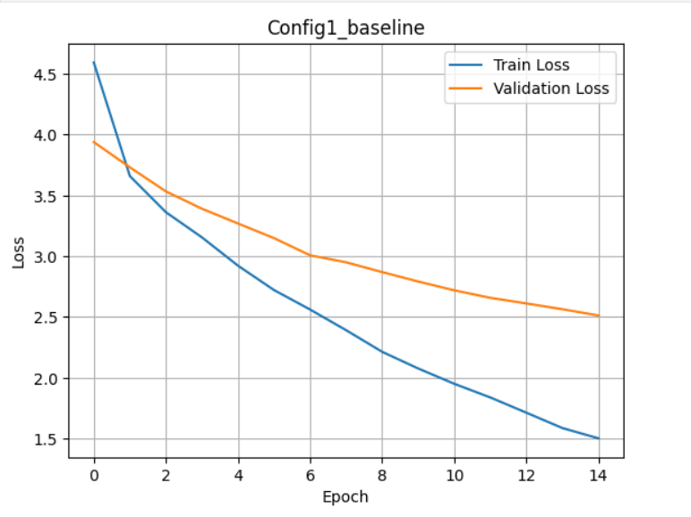
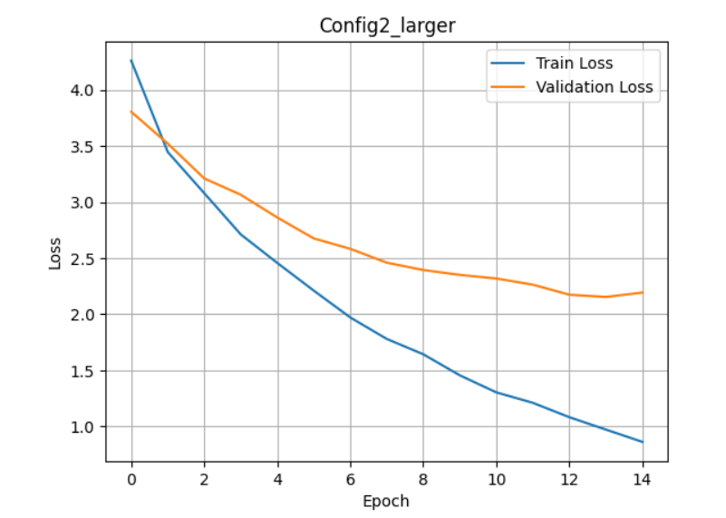
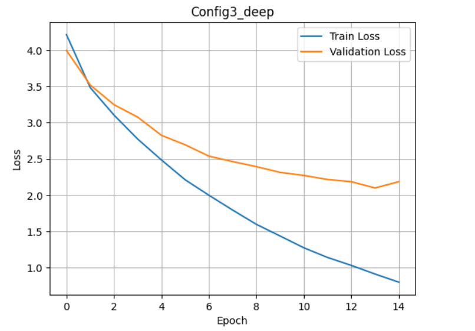
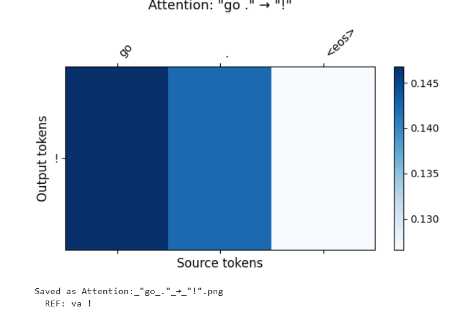
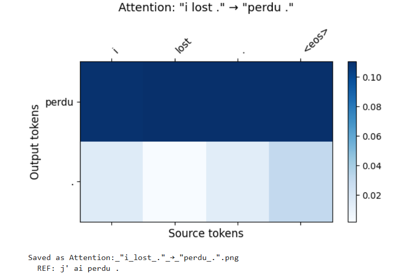
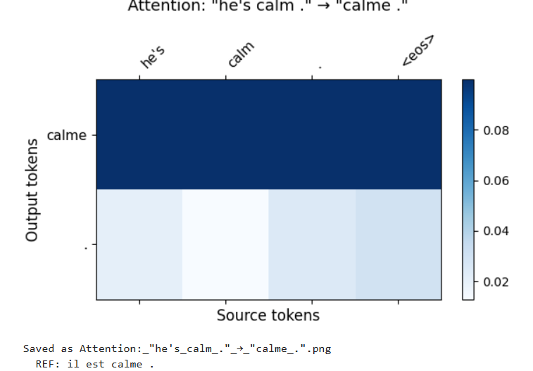
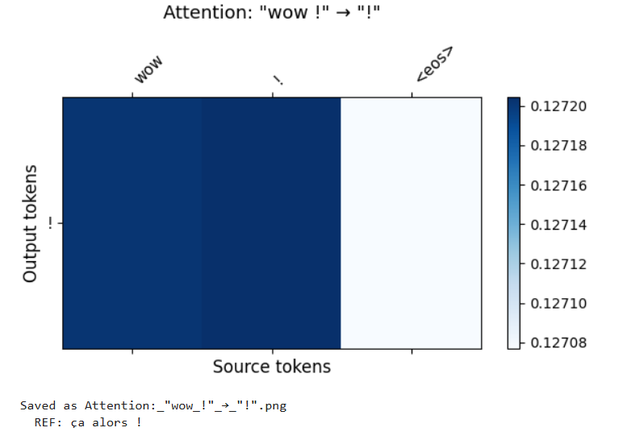

This includes the implementation, training and evaluation of attention-based Seq2Seq models for English to French neural machine translation. The project has two parts: part 1 covers the implementation and hyperparameter tunning of a Bahdanau attention mechanism build on top of a GRU-based encoder decoder, part 2 extends the model to multi-head attention to examine how multiple parallel attention heads affect translation quality and what different heads learn to focus on. Translation quality is measured using BLEU scores and attention weight visualizations.
The model consists of 3 main components:
A systematic grid search was performed over key hyperparameters to identify configurations that maximize BLEU score on the held-out test set. The top three configurations were selected. Several hyperparameter configurations were tested to improve performance. Configuration summary:
Three configurations were trained on 10000 English_French sentence pairs for 15 epochs using:
| Config | embed_size | Num hiddens | num_layers | dropout | lr |
|---|---|---|---|---|---|
| Config1 | 128 | 128 | 1 | 0.1 | 0.001 |
| Config2 | 256 | 256 | 2 | 0.3 | 0.001 |
| Config3 | 256 | 256 | 2 | 0.2 | 0.0005 |
=== Training Config1_baseline === Epoch 1/15 | Train Loss: 4.5943 | Val Loss: 3.9393 Epoch 2/15 | Train Loss: 3.6599 | Val Loss: 3.7320 Epoch 3/15 | Train Loss: 3.3626 | Val Loss: 3.5336 Epoch 4/15 | Train Loss: 3.1555 | Val Loss: 3.3910 Epoch 5/15 | Train Loss: 2.9225 | Val Loss: 3.2698 Epoch 6/15 | Train Loss: 2.7219 | Val Loss: 3.1492 Epoch 7/15 | Train Loss: 2.5618 | Val Loss: 3.0081 Epoch 8/15 | Train Loss: 2.3916 | Val Loss: 2.9503 Epoch 9/15 | Train Loss: 2.2137 | Val Loss: 2.8698 Epoch 10/15 | Train Loss: 2.0765 | Val Loss: 2.7924 Epoch 11/15 | Train Loss: 1.9507 | Val Loss: 2.7198 Epoch 12/15 | Train Loss: 1.8383 | Val Loss: 2.6582 Epoch 13/15 | Train Loss: 1.7129 | Val Loss: 2.6119 Epoch 14/15 | Train Loss: 1.5866 | Val Loss: 2.5642 Epoch 15/15 | Train Loss: 1.5020 | Val Loss: 2.5130

=== Training Config2_larger === Epoch 1/15 | Train Loss: 4.2597 | Val Loss: 3.8035 Epoch 2/15 | Train Loss: 3.4459 | Val Loss: 3.5209 Epoch 3/15 | Train Loss: 3.0790 | Val Loss: 3.2103 Epoch 4/15 | Train Loss: 2.7117 | Val Loss: 3.0651 Epoch 5/15 | Train Loss: 2.4577 | Val Loss: 2.8622 Epoch 6/15 | Train Loss: 2.2109 | Val Loss: 2.6759 Epoch 7/15 | Train Loss: 1.9716 | Val Loss: 2.5831 Epoch 8/15 | Train Loss: 1.7805 | Val Loss: 2.4599 Epoch 9/15 | Train Loss: 1.6435 | Val Loss: 2.3944 Epoch 10/15 | Train Loss: 1.4564 | Val Loss: 2.3510 Epoch 11/15 | Train Loss: 1.3043 | Val Loss: 2.3188 Epoch 12/15 | Train Loss: 1.2112 | Val Loss: 2.2639 Epoch 13/15 | Train Loss: 1.0832 | Val Loss: 2.1745 Epoch 14/15 | Train Loss: 0.9730 | Val Loss: 2.1545 Epoch 15/15 | Train Loss: 0.8633 | Val Loss: 2.1935

=== Training Config3_deep === Epoch 1/15 | Train Loss: 4.2140 | Val Loss: 3.9961 Epoch 2/15 | Train Loss: 3.4845 | Val Loss: 3.5207 Epoch 3/15 | Train Loss: 3.1065 | Val Loss: 3.2492 Epoch 4/15 | Train Loss: 2.7750 | Val Loss: 3.0777 Epoch 5/15 | Train Loss: 2.4872 | Val Loss: 2.8266 Epoch 6/15 | Train Loss: 2.2135 | Val Loss: 2.6958 Epoch 7/15 | Train Loss: 2.0008 | Val Loss: 2.5398 Epoch 8/15 | Train Loss: 1.7961 | Val Loss: 2.4645 Epoch 9/15 | Train Loss: 1.5993 | Val Loss: 2.3949 Epoch 10/15 | Train Loss: 1.4385 | Val Loss: 2.3153 Epoch 11/15 | Train Loss: 1.2762 | Val Loss: 2.2736

| Config | Avg BLEU-4 |
|---|---|
| Config1_baseline | 0.1839 |
| Config2_larger | 0.1839 |
| Config3_deep | 0.2759 |
Config1_baseline: started with a high train loss of 4.59 and decreased to 1.50 by epoch 15. The validation loss dropped from 3.93 to 2.51. Which shows consistent leaning throughout the training. However the gap between train loss and val loss indicates mild overfitting due to small model capacity. Config2_larger: showed faster convergence than config1, reaching a train loss of 0.86 by epoch 15 compared to 1.50 for Config1. The larger hidden size of 256 and 2 layers allowed the model to learn more complex patterns. Val loss reached 2.19 which is the best suggesting some overfitting. Config3_deeper: showed similar behavior to Config2 with train loss reaching 1.27 at epoch 11. The lower learning rate of 0.0005 caused slightly slower convergence compared to Config2. Resulted more stable training with less sharp drops in loss. Config3_deep has the highest BLEU score of 0.2759, outperforming both Config1 and Config2 despite not having the lowest validation loss. So, the lowest training loss does not always mean the best translation quality. Config1_baseline and Config2_larger both achieved identical BLEU scores of 0.1839 despite Config2 having a significantly lower final train loss of 0.86 compared to Config1.50. This suggests that Config2 overfit to the training data it memorized training sentences rather than learning generalizable translation patterns. The large gap between Config2 train loss (0.86) and val loss (2.19) confirms this overfitting behavior. Config3_deep used a slightly lower learning rate of 0.0005 combined with lower dropout of 0.2. The slower, more controlled learning rate prevented the model from overfitting aggressively, which is why it generalized better to unseen test sentences and achieved the highest BLEU score of 0.2759
Heatmaps:




Results and discussion:
"go .": The model only outputs"! " failing to generate the French verb "va". The attention heatmap shows the model focusing entirely on the punctuation token "." in the source. This is because "go ." is an extremely short imperative sentence and appears infrequently in the 10000 training examples, so the model never learned to map "go" to "va".
"I lost ." : The model correctly predicts "perdu" which means "lost" capturing the core meaning of the sentence. The attention heatmap is expected to show strong focused attention on the word "lost" when generating "perdu", showing the attention mechanism working correctly for content words. The auxiliary words "j' ai" are missing because the model has not fully learned French grammatical structure with limited training data.
"he's calm ." : This is the best result among all four sentences. The model correctly predicts "calme" which is the exact French translation of "calm". The attention heatmap should show a clear focused pattern where the model attends strongly to "calm" in the source when generating "calme" in the output. This demonstrates that the attention mechanism successfully learns word level alignment when the vocabulary is well represented in training data.
“Wow”: the model predicts only the ‘!” like the “go” .
The four heatmaps demonstrate three distinct behaviors of the attention mechanism. For well represented vocabulary words like "calm" the model produces correct translations with focused attention weights showing clear word alignment. For partially known sentences like "i lost ." The model captures content words but misses grammatical structure. For rare or unseen phrases like "go ." and “wow” the model fails completely, producing only punctuation. These results show that the attention mechanism itself is functioning correctly but the limitations are because of insufficient training data and vocabulary coverage rather than a flaw in the attention architecture.
Multi-headed attention, runs multiple attention functions in parallel, allowing the model to jointly attend to information from different representation subspaces at different positions.
Epoch 1/20 | Train: 4.2316 | Val: 3.8468 Epoch 2/20 | Train: 3.4364 | Val: 3.5072 Epoch 3/20 | Train: 3.1041 | Val: 3.3365 Epoch 4/20 | Train: 2.8542 | Val: 3.2405 Epoch 5/20 | Train: 2.6935 | Val: 3.0976 Epoch 6/20 | Train: 2.5293 | Val: 2.9535 Epoch 7/20 | Train: 2.3713 | Val: 2.9246 Epoch 8/20 | Train: 2.2259 | Val: 2.8738 Epoch 9/20 | Train: 2.1111 | Val: 2.8035 Epoch 10/20 | Train: 1.9594 | Val: 2.7277 Epoch 11/20 | Train: 1.8609 | Val: 2.7283 Epoch 12/20 | Train: 1.7366 | Val: 2.6754 Epoch 13/20 | Train: 1.6181 | Val: 2.6109 Epoch 14/20 | Train: 1.5413 | Val: 2.5684 Epoch 15/20 | Train: 1.4614 | Val: 2.5456 Epoch 16/20 | Train: 1.3699 | Val: 2.4848 Epoch 17/20 | Train: 1.2714 | Val: 2.4643 Epoch 18/20 | Train: 1.2064 | Val: 2.4519 Epoch 19/20 | Train: 1.1320 | Val: 2.4330 Epoch 20/20 | Train: 1.0696 | Val: 2.4157
Epoch 1/20 | Train: 4.2255 | Val: 3.8214 Epoch 2/20 | Train: 3.4513 | Val: 3.5847 Epoch 3/20 | Train: 3.0794 | Val: 3.3049 Epoch 4/20 | Train: 2.7643 | Val: 3.0960 Epoch 5/20 | Train: 2.5561 | Val: 2.9959 Epoch 6/20 | Train: 2.3258 | Val: 2.8381 Epoch 7/20 | Train: 2.1685 | Val: 2.7296 Epoch 8/20 | Train: 2.0054 | Val: 2.6388 Epoch 9/20 | Train: 1.8473 | Val: 2.5566 Epoch 10/20 | Train: 1.7159 | Val: 2.5200 Epoch 11/20 | Train: 1.5988 | Val: 2.4540 Epoch 12/20 | Train: 1.4908 | Val: 2.3840 Epoch 13/20 | Train: 1.3597 | Val: 2.3669 Epoch 14/20 | Train: 1.2757 | Val: 2.3453 Epoch 15/20 | Train: 1.1779 | Val: 2.3003 Epoch 16/20 | Train: 1.0930 | Val: 2.2517 Epoch 17/20 | Train: 1.0070 | Val: 2.2566 Epoch 18/20 | Train: 0.9412 | Val: 2.2507 Epoch 19/20 | Train: 0.8647 | Val: 2.1865 Epoch 20/20 | Train: 0.8116 | Val: 2.2197
Epoch 1/20 | Train: 4.2683 | Val: 3.8853 Epoch 2/20 | Train: 3.4536 | Val: 3.5830 Epoch 3/20 | Train: 3.0719 | Val: 3.3303 Epoch 4/20 | Train: 2.8261 | Val: 3.1381 Epoch 5/20 | Train: 2.5877 | Val: 2.9710 Epoch 6/20 | Train: 2.3908 | Val: 2.8568 Epoch 7/20 | Train: 2.2160 | Val: 2.7756 Epoch 8/20 | Train: 2.0318 | Val: 2.6920 Epoch 9/20 | Train: 1.8780 | Val: 2.6242 Epoch 10/20 | Train: 1.7552 | Val: 2.5738 Epoch 11/20 | Train: 1.6232 | Val: 2.4849 Epoch 12/20 | Train: 1.5073 | Val: 2.4167 Epoch 13/20 | Train: 1.3561 | Val: 2.4058 Epoch 14/20 | Train: 1.3151 | Val: 2.3457 Epoch 15/20 | Train: 1.1759 | Val: 2.3623 Epoch 16/20 | Train: 1.1083 | Val: 2.3065 Epoch 17/20 | Train: 1.0212 | Val: 2.3144 Epoch 18/20 | Train: 0.9501 | Val: 2.2929 Epoch 19/20 | Train: 0.8755 | Val: 2.2856 Epoch 20/20 | Train: 0.8291 | Val: 2.2564
Epoch 1/20 | Train: 4.2504 | Val: 3.8435 Epoch 2/20 | Train: 3.4140 | Val: 3.4826 Epoch 3/20 | Train: 3.0541 | Val: 3.2169 Epoch 4/20 | Train: 2.7595 | Val: 3.0590 Epoch 5/20 | Train: 2.5390 | Val: 2.9466 Epoch 6/20 | Train: 2.3464 | Val: 2.8291 Epoch 7/20 | Train: 2.1515 | Val: 2.7085 Epoch 8/20 | Train: 2.0068 | Val: 2.6370 Epoch 9/20 | Train: 1.8613 | Val: 2.5919 Epoch 10/20 | Train: 1.6975 | Val: 2.4985 Epoch 11/20 | Train: 1.6006 | Val: 2.4280 Epoch 12/20 | Train: 1.4691 | Val: 2.4033 Epoch 13/20 | Train: 1.3680 | Val: 2.3597 Epoch 14/20 | Train: 1.2564 | Val: 2.3429 Epoch 15/20 | Train: 1.1461 | Val: 2.2779 Epoch 16/20 | Train: 1.0886 | Val: 2.2442 Epoch 17/20 | Train: 1.0101 | Val: 2.2262 Epoch 18/20 | Train: 0.9287 | Val: 2.2863 Epoch 19/20 | Train: 0.8669 | Val: 2.2315 Epoch 20/20 | Train: 0.8082 | Val: 2.2039
Increasing the number of attention heads generally improved training loss convergence. Validation loss decreased most efficiently with 8 heads suggesting better generalization. Multi-head attention allows the model to capture diverse features from different representation subspaces, improving performance compared to a single head.
| Config | Avg BLEU-4 |
|---|---|
| 1_head | 0.1226 |
| 2_heads | 0.1226 |
| 4_heads | 0.1226 |
| 8_heads | 0.2420 |
Best model: 8_heads (BLEU=0.2420)
Observations: BLEU remained low for 1,2,4 heads. The 8 -head model achieved the highest indicating improved translation quality. This is showing that adding more attention heads allows the model to capture more contextual information and improve translation quality.
REF : j' ai perdu . PRED: perdu perdu . REF : il est calme . PRED: est calme . REF : il est jeune . PRED: est grand .
Observation: the translation improves slightly, although some errors are still there. Multi-head attention helps capture structural relationships better than single-head attention.
Attention weights: For selected sentence pairs, we plotted attention heatmaps for all 8 heads.
Example: “i lost .” → “j’ai perdu .”
Head diversity: Some heads focus on individual source words (e.g., “i” or “lost”), while others attend broadly across the sentence.
Redundancy: Certain heads show similar attention patterns, which can reinforce key information.
Interpretation: Multiple heads allow the model to capture complementary features of the input sequence.
Multi-head attention significantly improves neural machine translation performance over single-head attention, capturing richer contextual information and enabling better sequence modeling. This project demonstrates both the practical implementation and interpretability of attention mechanisms.